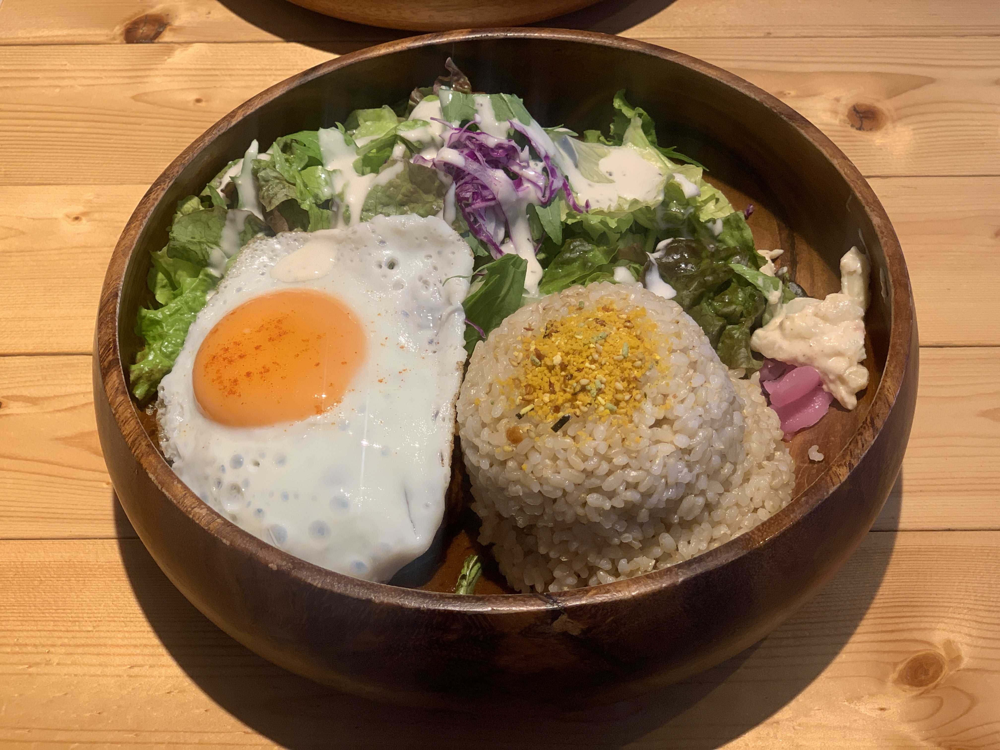
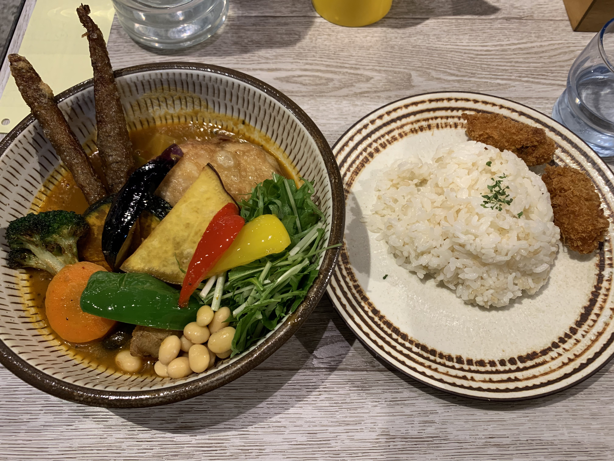
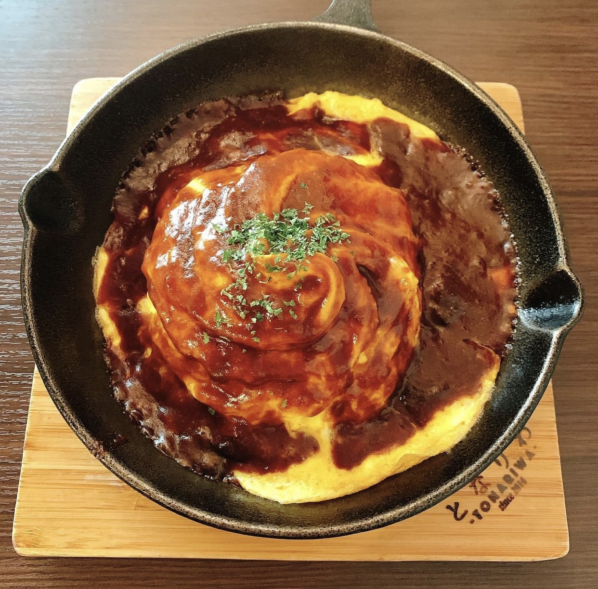
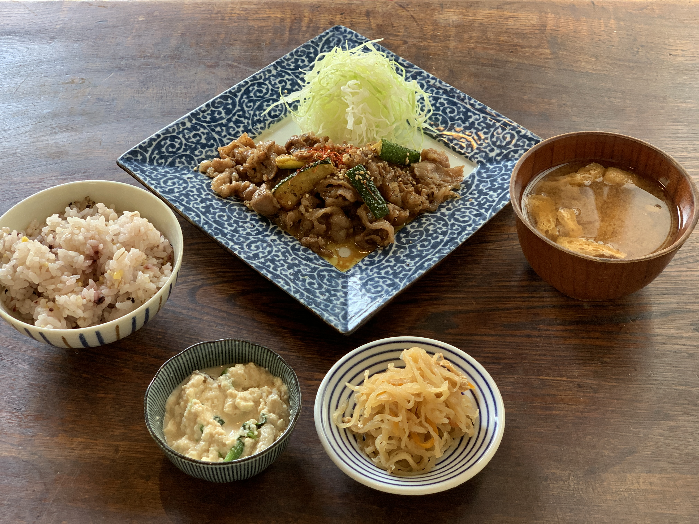

八王子/立川周辺のお店
LUNCH
AINA CAFE
- 八王子駅より徒歩5分
- 営業時間 : 平日11:00-15:00 休日9:00-17:00
- 定休日 : 無し
- 八王子のハワイアンカフェ。開放感があり元気な英語が飛び交う明るい雰囲気の店内で、ボリュームたっぷりのロコモコご飯を食べてきました。サラダとご飯は少なめ・普通・多めから選ぶことができるため自分に合った量に調節してもらえるのも◎
- AINA CAFE ホームページ

Rojiura Curry SAMURAI
- 京王八王子駅より徒歩1分
- 営業時間 : 11:30-15:30 17:30-21:30（30分前L.O.）
- 定休日 : 無し
- ガラス張りのおしゃれな店構えが目をひくカレー専門店。野菜たっぷりのカレーは見た目も内容も大満足なのについつい何かトッピングしたくなります。。私はカキフライをトッピングしました。栄養満点で味も大満足でした。
- Rojiura Curry SAMURAI ホームページ

となりわ
- 八王子駅より徒歩7分
- 営業時間 : 11:30-15:00 17:00-23:00（22:00L.O.）
- 定休日 : 火曜日
- 路地裏の細い道に入ると森の中に古民家があらわれたと感じるようなわくわくするお店。テラス席もあり涼しい季節には自然を感じながら食事を楽しめます。店内はまさに古民家を改装した落ち着いた雰囲気があり、笑顔が素敵な店員さんにも癒されます。ディナーも行ってみたいお店です。
- となりわホームページ

中町食堂
- 八王子駅より徒歩5分
- 営業時間 : 平日11:00-15:00 17:00-23:00 土日祝・祝前日15:00-23:00
- 定休日 : 無し
- こちらも古民家をお店に改装した食堂。こだわりの料理はどれも絶品でコスパ◎ランチの定食は白米か雑穀米が選べて、お味噌汁とともにお替り自由。週替わり定食があるので毎週行きたくなるお店。2階が和室で全席畳なのも素敵。近くにある系列店「魯肉ボーイと麻婆ガール」も行ってみたいところ。
- 中町食堂ホームページ

DINNER
Over
- 八王子駅より徒歩6分
- 営業時間 : 11:30-15:00 18:00-24:00
- 定休日 : 無し
- ドリンクの種類がずば抜けて豊富なお店。お酒の強さで店主に相談することもできる。コースは料理のボリューム満点でコスパおばけ。店内は席数が少なめで雰囲気のある暗めの照明で落ち着いており、3人以上の女子会にぴったり。
- Overホームページ

酒処きずな
- 八王子駅より徒歩7分
- 営業時間 : 17:00-23:00
- 定休日 : 無し
- 海鮮が有名な昭和の雰囲気漂う居酒屋。大人気の産地直送の生ガキは見るたびに驚くほどの大きさ。店主が元はカレー屋さんをしていたのもあってか、カツカレーも絶品。すべてのメニューが安くて量が多い、コスパ最最最強のお店。

ホームに戻る